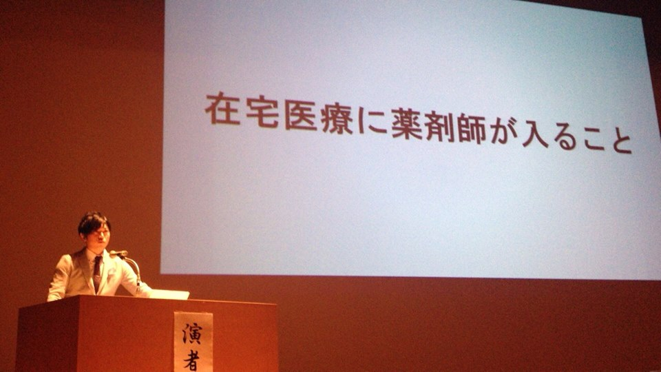

伝えたいメッセージ
株式会社タカサ
薬剤師山内伴紀さん
調剤薬局経験9年。在宅訪問にいち早く取り組み、在宅訪問歴は５年を誇る。患者数は延べ1000名を超え、今なお在宅の現場で患者の薬に関する悩みをサポートしている。高齢者・がん終末期の患者を中心に、障害を持つ患者も含めて、幅広く自宅で療養したいという人々の気持ちを支えている。
自ら発信することで質の高い医療を
患者さんへの薬の説明の際に心がけていることを教えて下さい。
適した薬剤かどうか判断するために、患者さんに生活環境をお聞きしています。私のモットーは人と人との繋がりを大切にして、安心・安全な薬とのお付き合いができるようにお伝えすることです。
患者さんの意見を尊重して、困った時は助けられるような寄り添う存在でいたいと考えています。
薬剤師として努力されていることはありますか。
より質の高い医療提供するためには、薬剤師が貢献できる領域を広げることが重要です。また、薬剤師一人の力では限界があると感じているので、近隣の薬剤師教育に注力しています。その一環として症例発表や報告会の団体も立ち上げました。
学会発表内容を多くの薬剤師さんに寄与できるように、その資料を親しみ易いYouTubeや漫画などに投稿し、薬剤師全体を支える存在になりたいと思っています。
患者の想いを尊重したい
患者さんとの間で思い出に残っているエピソードを教えて下さい。
小学生から大学生までのお子さんがいらっしゃる40代後半のお母さんとのお話です。
その方は末期の癌で、残された時間を家族と住み慣れた家で過ごすことを希望されました。その想いを叶えるには高度な医療材料・調剤技術をご自宅で実現することが必要であり、薬剤師の訪問依頼がきました。
ある時、容体が急変し救急搬送で病院に戻りましたが、どうしても家族と過ごしたいという想いから、半ば強制的に退院されました。しかし、その時はまだ在宅で受入れられる準備も無い状態でした。そこで患者さんの想いを一番に尊重し、医師・薬剤師・ケアマネージャー・看護師の全てが患者さんの家に集まりカンファレンスを実施しました。患者さんの気持ちと状態に適した薬の処方と投与方法を私がチームに提案し、受け入れられることになりました。
亡くなられる最後まで自宅で過ごしたいという患者の願いを叶えることができ、ご家族や医療チームの支えになれた経験は、薬剤師のあるべき姿を感じられた体験となりました。
最後に患者さんへのメッセージをお願いします。
今健康だから大丈夫ではなく、先のことを考えて生活して頂きたいです。病気にならないための生活面で知りたいことはいつでも聞きにいらして下さい。
世の中には間違った情報が沢山出回っているのが現状です。サプリメントやお薬に関して適切な情報は日々学んでおります。正しい情報を調べる能力が薬剤師にはありますので、薬局へ相談にどんどんいらして下さい。ぜひあなたのかかりつけ薬剤師を見つけてください。